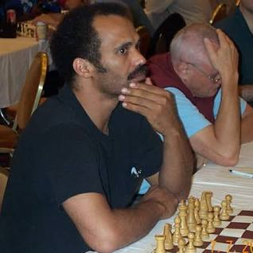

Emory Andrew Tate Jr.was born in Chicago,
Illinois, on December 27, 1958. He grew up in a family of nine children.
His father, Emory Andrew Tate Sr., was an attorney, and his mother, Emma Cox Tate,
ran a truck-leasing business. Tate Jr. learned to play chess as a child. He served in the
United States Air Force as a sergeant, where he "excelled as a linguist.
"Tate learned Spanish through being an exchange student in Mexico.

He was "chosen to participate in the Indiana University Honors Program in Foreign Language,
Spanish Division during the summer of 1975" and spent two months living with a Mexican family.